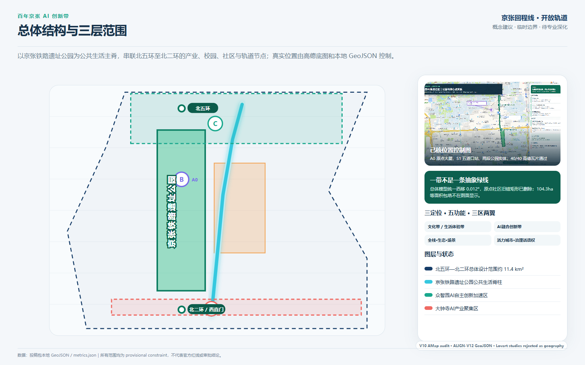
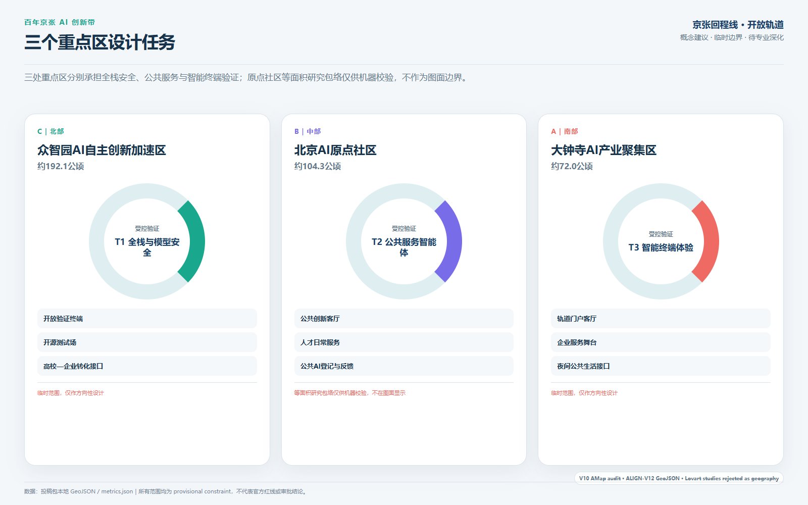
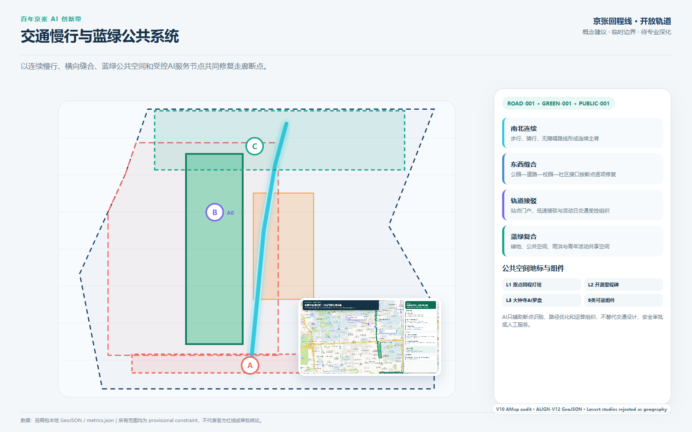
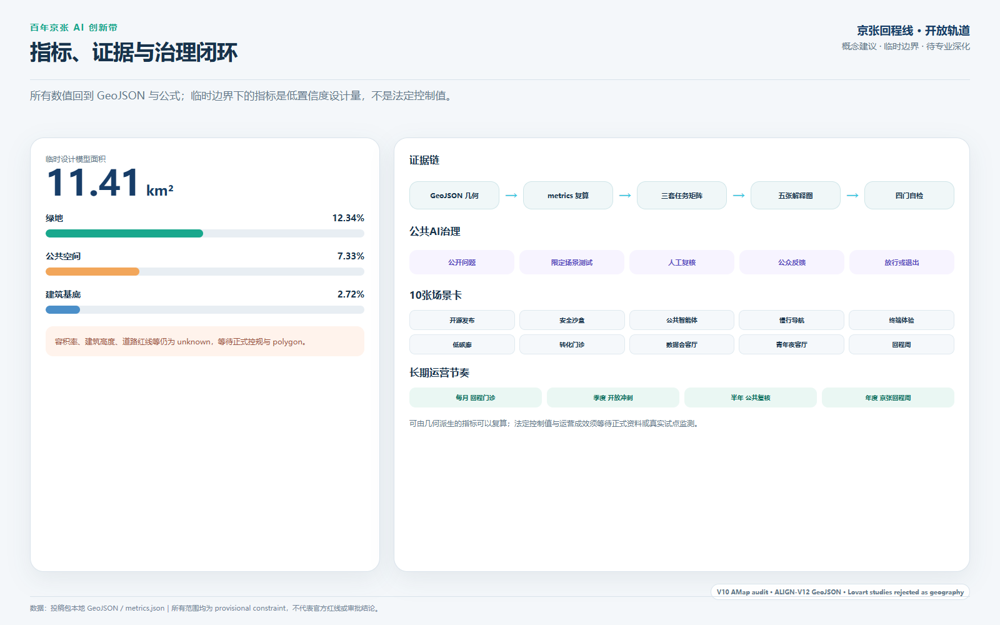

01 总体结构与三层范围
一条公共创新脊柱连接北五环至大钟寺的产业、校园、社区和轨道节点。

让创新从封闭园区返回街道，让青年从旁观者返回共同建设者，让技术从演示返回可监督的真实服务。
一条公共创新脊柱连接北五环至大钟寺的产业、校园、社区和轨道节点。

“行—留—创”共享一条空间骨架，不形成三个互相割裂的主题片区。

以公告面积和任务为约束；原点社区不在错误临时位置上出图。

连续慢行、横向缝合、蓝绿公共空间和受控 AI 服务节点共同修复走廊断点。

数值回到 GeoJSON 与公式；公共 AI 场景遵循限定测试、人工复核、公众反馈和退出机制。

12 项故障场景已做离线桌面协议演练；六项现场性能指标仍未运行。协议写全不等于现场达标。
公开目的、数据、责任人、人工渠道和退出日期。
停止：任一场景告知不完整。
无需登录、无需智能设备也能完成基本公共任务。
停止：人工路径被撤除。
对现场审计的重点路线逐段验收。
停止：盲道、坡道或净线出现关键阻断。
基线完成后校准；必须有具名值守角色。
停止：超过10分钟或无人负责。
安全和权利类问题必须进入公开处置记录。
停止：超过48小时未响应。
试点关闭后拆除设施、关闭账号并删除到期数据。
停止扩展：公共空间超期占用。
不登录、不使用智能设备，也能沿连续无障碍路线完成换乘；AI异常时转人工指引。
可申请非消费空间，也可拒绝画像和推荐；拒绝不影响空间使用权。
发现错误提示后找到人工窗口、看到场景暂停；设施退出后空间仍可正常使用。
结构化证据：simulation.json（内嵌 12 项故障矩阵与 24 样本计划）。`self_check.json` 只证明文件合规，不替代未来现场证据。
慢行断点清单、公共创新客厅、青年共创权、公共 AI 登记样板。
众智园验证终端、原点社区日常服务、大钟寺轨道门户客厅；等待正式边界与专业条件。
会员联盟、中立运营平台、年度全球活动、公开评估与退出。